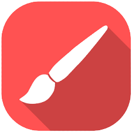
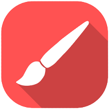

How to Download
First, click on the 'Go to Dwonload Page' button above. You will be redirected to a medifire page. Click on 'Download' and wait till the file is downloaded. Open and extract the file using WinRar. If you don't have it on your PC, click here to download it.
You will get a setup file after extracting the downloaded file. Open the setup file by double clicking on it. Grant the permission if asked. Click on 'Next' and click on install. Done! PaintX is installed on your PC. Click on the Windows button on your keyboard, or go to Desktop to find PaintX icon. Open PaintX by double-clicking on the icon.
Usage of the App
Using this app is very simple.
Click on any one of the colors in the color pallate.
You can also use the Colors button to choose colors.
Click on the Eraser button to erase your drawing.
Use the Size section to adjust the size of the eraser or paint brush.
Click on the clear button to clear your drawing canvas.
Click on the save button to save your drawing.
Overview Of The App
This app is a painting app, just like Microsoft Paint. The only Difference is the User Interface. You can Paint with any color you want, and also save your drawing to share it with your friends.